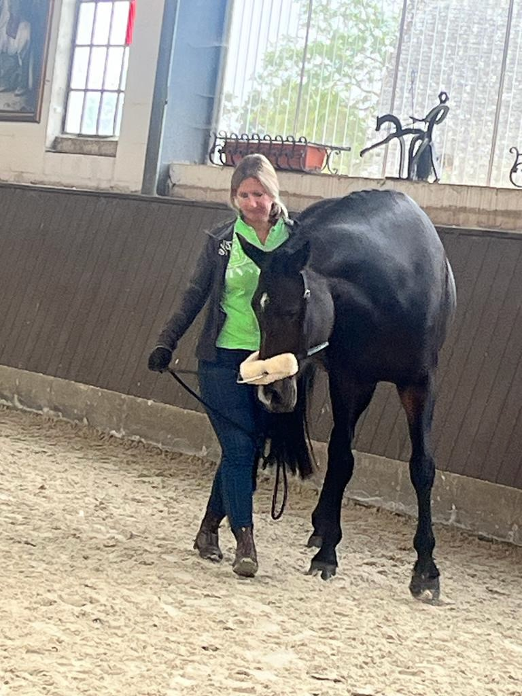

Über mich
Mein Weg zum tensegralen Training
Wie bin ich zum tensegralen Training gekommen?

Es begann alles mit meiner selbst gezogenen Stute Dafinja, Tochter meiner ebenfalls selbst gezogenen Stute Granini.
„Finja" war von Anfang an etwas ungewöhnlich. Extrem menschenbezogen und gleichzeitig das selbstbestimmteste Pferd, das ich kennengelernt habe. 4-jährig habe ich sie in bester Absicht zum Anreiten gegeben. Dies wurde nach kurzer Zeit abgebrochen. Sie hatte immer wieder Panikattacken und Schwierigkeiten, auf einem engeren Zirkel zu galoppieren. Sie war mehrfach in Profiberitt mit unterschiedlichen Ansätzen. Das Ergebnis blieb gleich: ausgeprägter Sattelzwang, unkontrolliertes Bocken aus dem Nichts, schwere Stürze der Reiter. Ich habe mich leider immer wieder von Profis überzeugen lassen, dass es nur Ungehorsam ist und das korrigiert werden muss. Mein Bauchgefühl sagte: Sie hat ein gesundheitliches Problem. Denn ein Satz hat mich nachhaltig beschäftigt:
Nach einer Tierarzt-Odyssee und vielen Röntgenaufnahmen wurde endlich die Ursache gefunden: Facettengelenksarthrose der Halswirbelsäule C3/4 und C6/7 sowie Ataxie der Hinterhand Grad 2–3, vermutlich durch Nervenkanalverengungen.
Das war zunächst ein Tiefschlag, wenngleich er auch eine befreiende Erklärung für ihr Verhalten war.
Und so begann ich, mich intensiv mit gesunderhaltendem Training vom Boden zu beschäftigen. Denn eins war klar: Weggeben? Niemals! Wegstellen? Auch nicht, da war die Aussage der Tierärzte klar: Du musst sie im Training behalten und all die Strukturen im Körper stärken, die die Defizite der Halswirbelsäule ausgleichen. Und so landete ich auch in entsprechenden Facebook-Communitys zu ECVM und HWS-Arthrosen. Neben vielen anderen Trainingsmethoden kam ein Begriff immer wieder vor: Tensegrales Training. What?
Als dann ein Kurs in meiner Nähe stattfand, bin ich als Zuschauer hingefahren. Erster Eindruck: Die stehen ja fast nur rum und drücken irgendwas am Pferd rum, oder sie laufen im Zeitlupenschritt mit einem seltsamen Kappzaum. Ich besuchte noch mehrere dieser Kurse und wagte dann den Schritt zur Teilnahme mit beiden Pferden. Ich hätte nie geglaubt, welchen Unterschied es macht, es selbst auszuführen und zum Fühlen zu kommen, Timing zu entwickeln und zu sehen, wie die eigenen Pferde entspannen und neue Wege zulassen. Von da an war klar: Ich möchte das unbedingt lernen. Und so nahm ich immer wieder Unterricht bei einer zertifizierten Trainerin und schaute mir alles an, was es zum Training gab.
2023 bewarb ich mich für die Trainerausbildung bei der Horse Tensegrity Training GmbH und musste lange auf einen Platz warten. Weihnachten 2024 erhielt ich dann die Zusage, 2025 ging die spannende Reise los mit Modul 1 der Ausbildung. Finja war mein Projektpferd der Trainerausbildung, und so konnten wir gemeinsam wachsen und Fortschritte erzielen. Sie hat heute eine Idee von Losgelassenheit, Balance, Takt und Freude an Bewegung. Ich kombiniere die tensegralen Grundsätze mit klassischer Handarbeit, Langzügel, Dualgassen und Longenarbeit. Dabei wende ich Methoden und Elemente von ganz verschiedenen Trainern an, die meinen Zuspruch genießen.
Denn Finja ist kein Pferd für ein täglich gleiches, monotones Programm. Sie möchte Spiel, Spaß und Abenteuer. Sie ist meine beste Lehrmeisterin und mein Antrieb, mich immer weiterzuentwickeln und den Pferden genau zuzuhören.
Aber auch meine Seniorin Granini profitiert von dieser Art des Trainings. Als hypomobiler und eher hypotoner Pferdetyp (d. h. flexibel wie eine Bahnschranke, mit niedriger Körperspannung) bleibt sie im Alter beweglich und stabil zugleich. So kann ich sie auch noch in ihrem fortgeschrittenen Alter von 26 Jahren dosiert reiten und mit unserem „Yogaprogramm" fit halten.
Was habe ich aus dieser Geschichte gelernt?
- Pferde kommunizieren so viel – wenn man nur die Fähigkeit hat zuzuhören.
- Wir können als Besitzer so viel bewirken und mit einfachen Mitteln selbst zum besten Trainer unseres Pferdes werden.
- Wenn ein Pferd NEIN sagt, ist es kein „Testen" oder „Faulheit" – es hat unsere Aufgabenstellung nicht verstanden, oder es kann sie körperlich bzw. mental nicht erfüllen.